Mar 2026 –
Present
Present
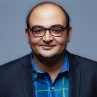
Dr. Faisal Mahmood · Harvard Medical School / BWHNo publications listed from this project yet.
Building multiscale world models
to understand disease mechanisms and translate them into clinically actionable insights.
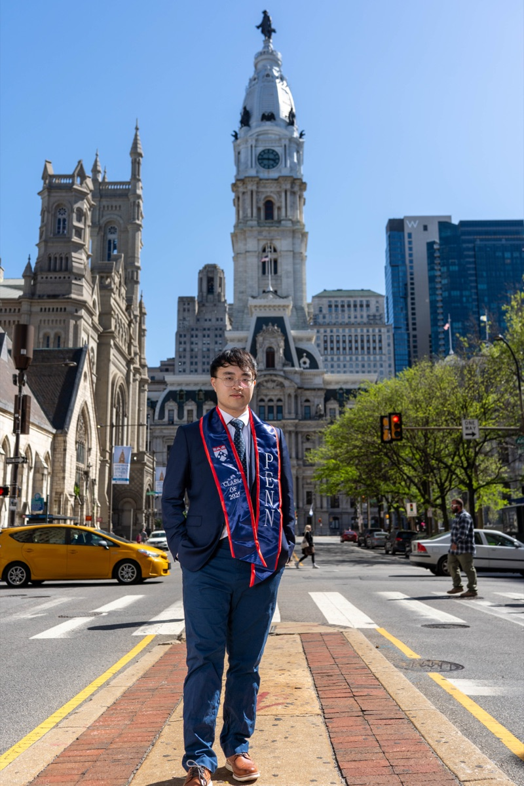
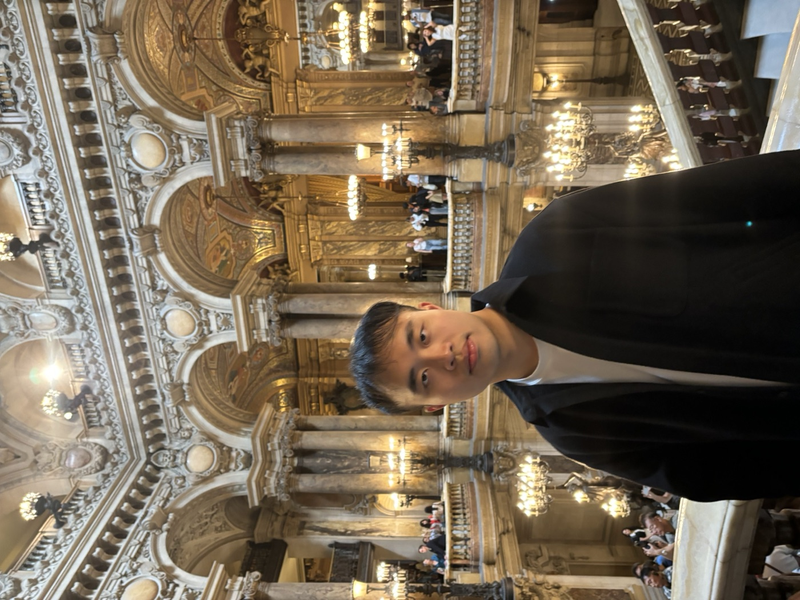
I am a Harvard PhD candidate in Biomedical Informatics working at the frontier of AI for science and biomedical AI. My interests span AI for spatial omics, cells, and electronic health records — and, running through all of them, the idea of a multiscale world model that reasons from the molecular to the tissue to the patient scale.
Alongside research, I am pursuing entrepreneurship and venture building — I care about how biomedical AI actually reaches patients. Previously, I graduated summa cum laude from the University of Pennsylvania with triple degrees in Statistics (Wharton), Mathematics, and Computational Biology. Beyond the lab, I am a violinist of 13 years and an avid runner.
Passed my PhD qualifying exam and advanced to candidacy — officially a PhD candidate in Biomedical Informatics at Harvard Medical School.
PATCH — our paper on uncertainty quantification for spatial proteomics — was accepted to the Agentic Uncertainty workshop at ICML 2026. Excited to share the work and meet folks in Seoul this July!
Awarded the NSF Graduate Research Fellowship (GRFP) with a focus on AI for Life Sciences. Grateful to advisors, collaborators, and reviewers!
Joined Dr. Faisal Mahmood's lab at Harvard Medical School / BWH to work on multi-modal foundation models for AI virtual patients.
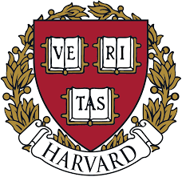
PhD Candidate in Biomedical Informatics
Bioinformatics & Integrative Genomics (BIG) Program
Thesis advisor: Faisal Mahmood
Advanced to candidacy, Nov 2026
B.S. Statistics, The Wharton School
B.A. Mathematics & Computational Biology, College of Arts & Sciences
Summa Cum Laude · Beta Gamma Sigma
Minors in Computer Science & Data Science
Selected experiences developing biomedical AI — multi-modal foundation models, virtual cells, and virtual patients — across Harvard, Penn, Cold Spring Harbor Laboratory, and Cedars-Sinai.

Dr. Faisal Mahmood · Harvard Medical School / BWHNo publications listed from this project yet.
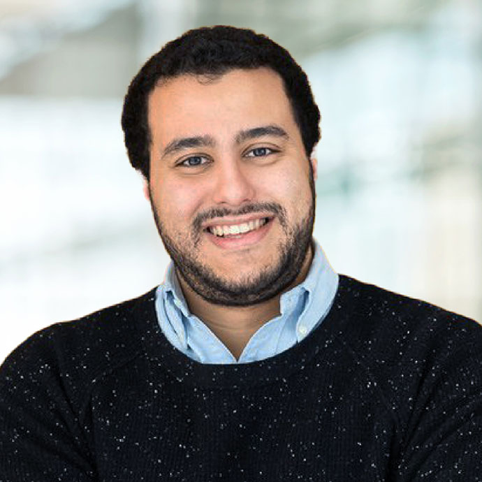
Drs. Omar Abudayyeh & Jonathan Gootenberg · Harvard Medical SchoolNo publications listed from this project yet.
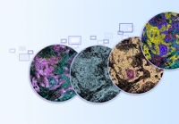
Dr. Kun-Hsing Yu · Harvard University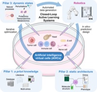
Dr. Pranav Rajpurkar · Harvard UniversityNo publications listed from this project yet.
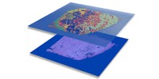
Dr. Mingyao Li · University of Pennsylvania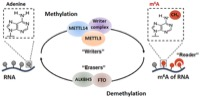
Dr. Brian Gregory · University of PennsylvaniaNo publications listed from this project yet.
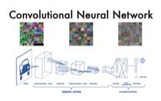
Dr. Peter Koo · Cold Spring Harbor Laboratory (NSF REU)No projects under this theme.
Advancing reproducibility standards for state-of-the-art ML research through rigorous evaluation rubrics and model assessments.
Built AI models for protein binder design and binding affinity prediction, supporting structure-based therapeutic discovery.
Due diligence on AI-driven drug discovery startups; organizing expert salons at the Boston-Cambridge biotech hub.
Department of Statistics, The Wharton School, University of Pennsylvania.
Open to research collaborations, venture-building conversations, and new connections.
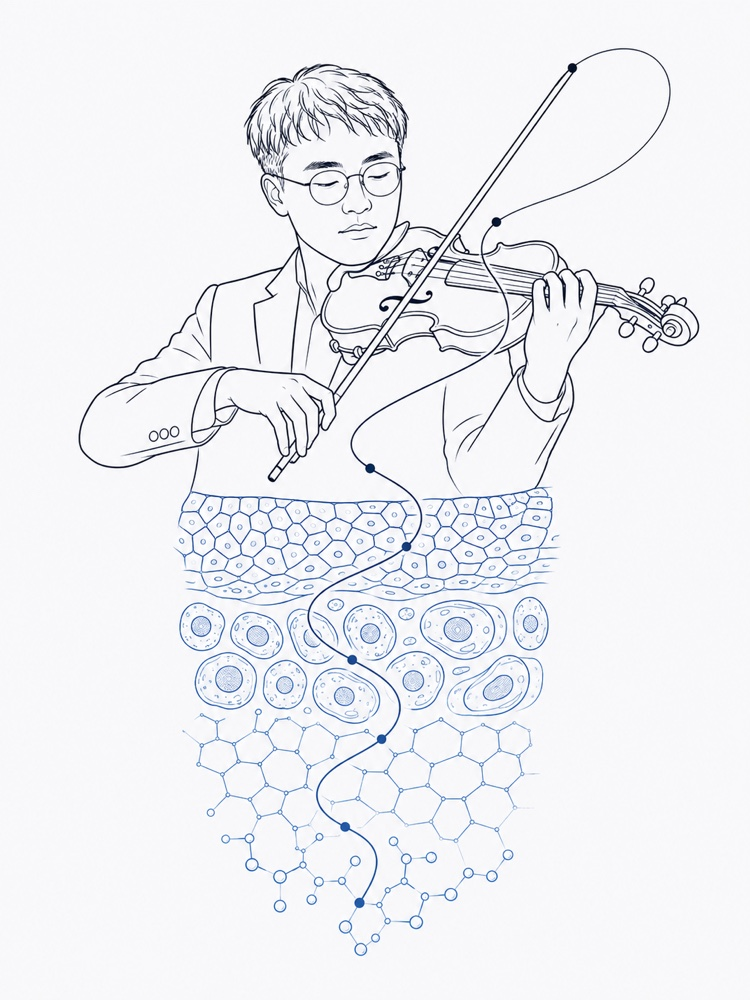